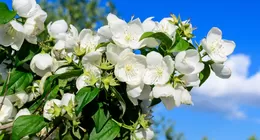
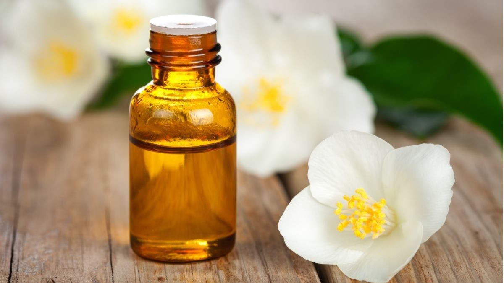
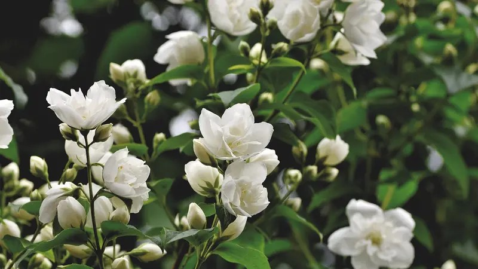

Simbolisme Budaya dan Keagamaan

Asia Tenggara: Di banyak negara, termasuk Indonesia, Filipina, dan Thailand, bunga melati memiliki peran penting dalam upacara keagamaan dan pernikahan. Di Indonesia, melati disebut sebagai “puspa bangsa” dan melambangkan kesucian dan kemurnian. Pada upacara pernikahan tradisional Jawa, bunga melati sering digunakan sebagai dekorasi pengantin. India: Melati juga memiliki peran besar dalam tradisi Hindu. Bunga ini digunakan dalam berbagai ritual keagamaan sebagai persembahan kepada dewa-dewi. Selain itu, melati sering dijadikan hiasan pada rambut perempuan dalam pernikahan tradisional. Cina: Melati dianggap sebagai lambang cinta, keindahan, dan sensualitas. Di Cina, teh melati (Jasmine Tea) juga sangat populer dan telah menjadi bagian penting dari budaya minum teh di sana.
Pengaruh di Barat
Melati pertama kali diperkenalkan di Eropa pada abad ke-16 melalui jalur perdagangan antara Timur dan Barat. Di Eropa, bunga melati dengan cepat menjadi populer di kalangan bangsawan karena wanginya yang khas. Pada abad ke-18, melati sering digunakan dalam produksi parfum di Prancis dan Spanyol.
Penggunaan dalam Pengobatan Tradisional
Bunga melati juga memiliki sejarah penggunaan dalam pengobatan tradisional, terutama di India dan Cina. Dalam Ayurveda dan pengobatan Cina, bunga dan minyak melati sering digunakan untuk mengatasi stres, insomnia, dan masalah kulit.
Makna dan Filosofi
>Di berbagai belahan dunia, melati melambangkan berbagai nilai, termasuk cinta, kesucian, keanggunan, dan ketenangan. Dalam banyak kebudayaan, melati dianggap bunga yang suci dan sering dikaitkan dengan spiritualitas serta kemurnian hati.